All screenshots below are real output from one 230-hour save (1.1, 16,021 buildings), rendered on the bundled placeholder map. Only one save was available for these pages, so the history charts show a single point; with your own save series they fill in over time.
What it does
Tier & Space Elevator
Milestones per tier, elevator phase and parts still to deliver.
Milestones per tier, elevator phase and parts still to deliver.
Milestone history
When each milestone first appeared across your saves.
When each milestone first appeared across your saves.
Factory census
Buildings by category, with bars.
Buildings by category, with bars.
Inventory & collectibles
Hard drives, somersloops, mercer spheres, power slugs: carried, peak, still in the world.
Hard drives, somersloops, mercer spheres, power slugs: carried, peak, still in the world.
Dimensional Depot gaps
Every buildable ingredient that is missing or low in the depot, with new/resolved diff.
Every buildable ingredient that is missing or low in the depot, with new/resolved diff.
Volume items
For each item: tier, which factory makes it, depot amount, drone routes, train stops.
For each item: tier, which factory makes it, depot amount, drone routes, train stops.
Transport & factory plan
Mark depot/drone/train wants, store factory designs and a next-factory marker in
Mark depot/drone/train wants, store factory designs and a next-factory marker in
plan.json.Building map
Heatmap and 50 m cells by category, factory boxes, stations, drone ports, snapshot slider.
Heatmap and 50 m cells by category, factory boxes, stations, drone ports, snapshot slider.
Insights
Progress charts, what changed since the last save, what the parser couldn't read.
Progress charts, what changed since the last save, what the parser couldn't read.
Progress
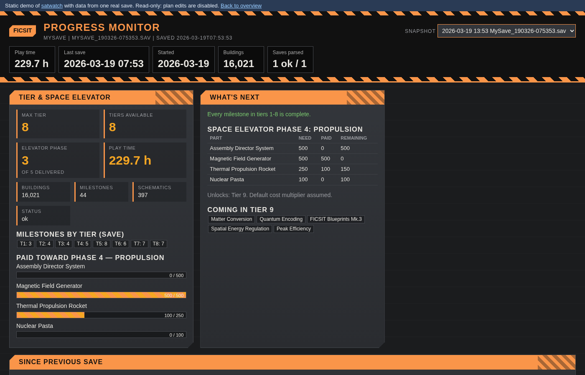
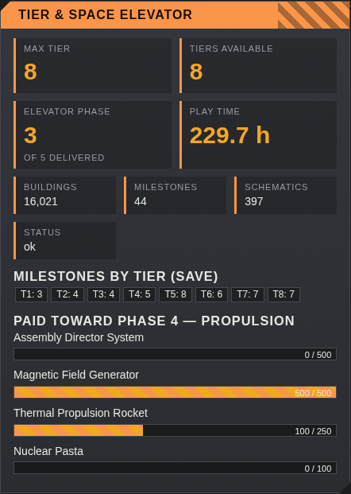
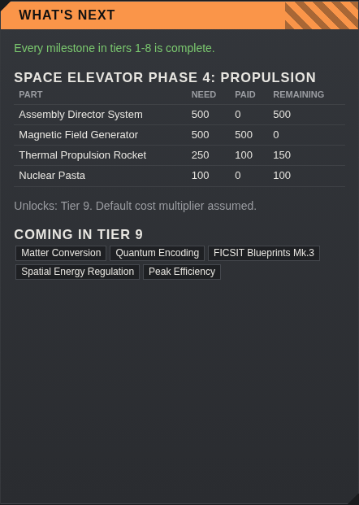
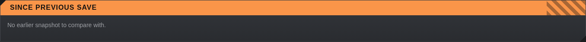
Dimensional Depot
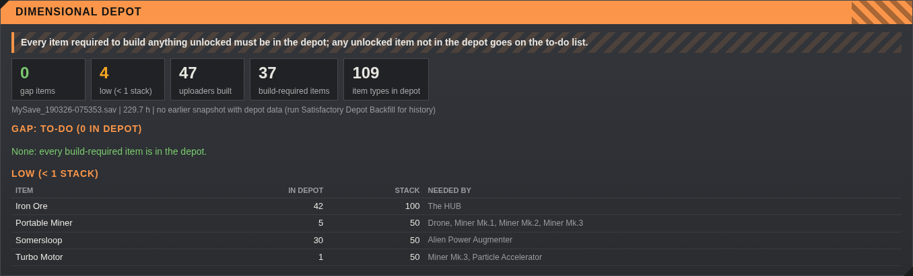
Volume items & transport plan
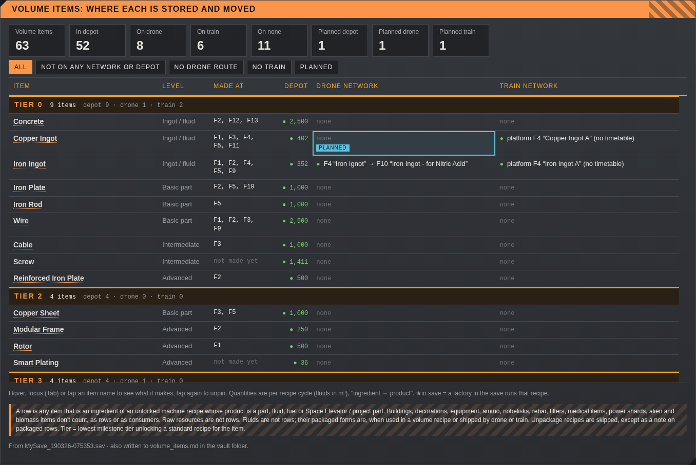
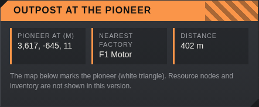
Factory map
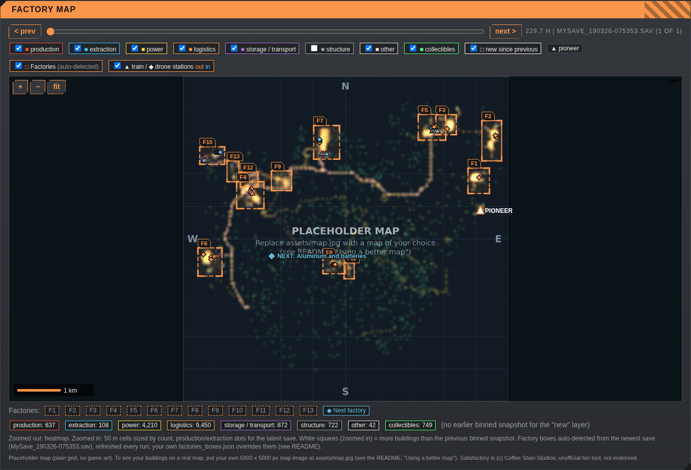
History
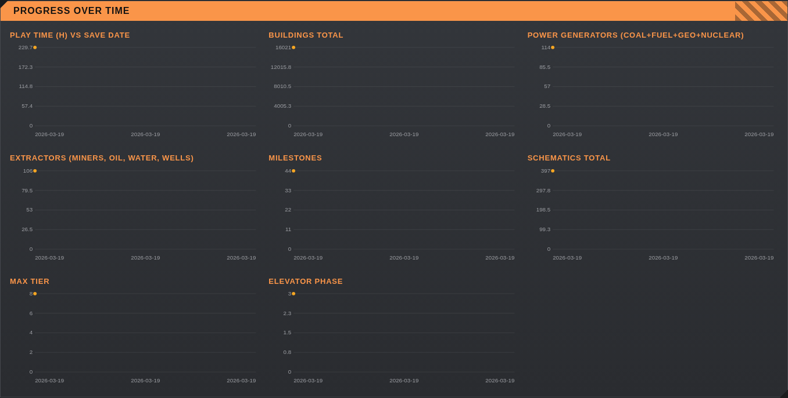
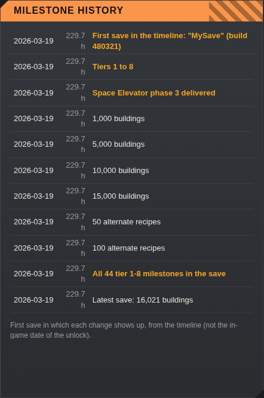
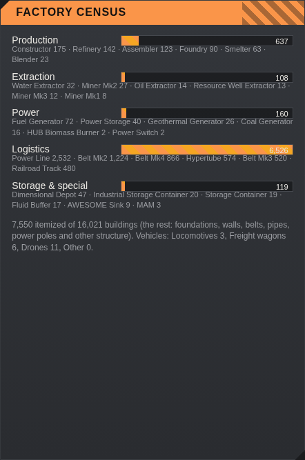
Inventory & parser notes
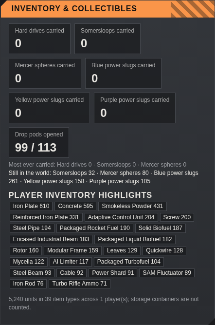
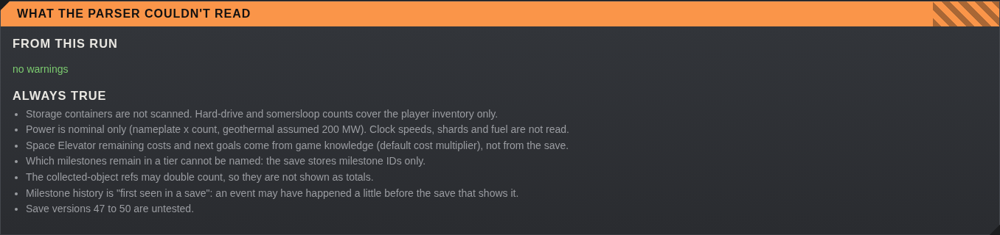
On a phone
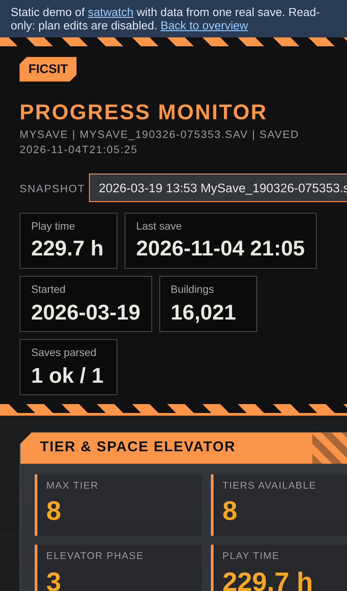
Get started
No setup: 1) download the ZIP and unzip it, 2) double-click Satisfactory Update.bat. It finds your saves and the session you played last, installs Python with winget if needed, and opens the dashboard. Optional settings are in the README.